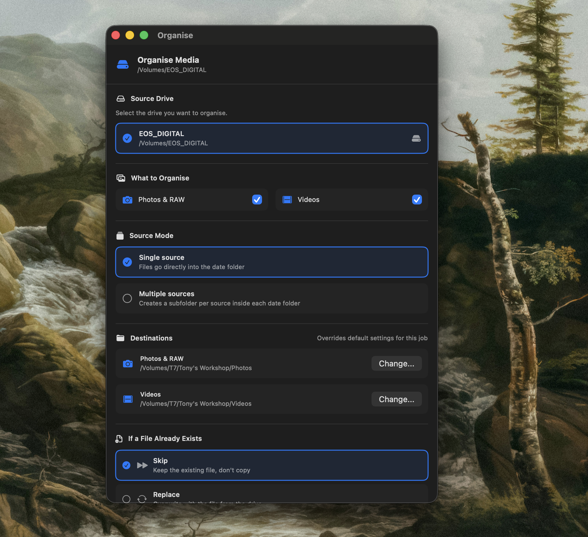

How it works
Two steps.
Then you're done.

Step 01
Set your destinations once
Tell Dewey where photos and videos should go. Got a Lightroom or Final Cut project folder? Set it as the default. You can always override it per session.

Step 02
Plug in and confirm
Dewey sits quietly in your menu bar. When a drive is detected it taps you on the shoulder. Choose what to copy, how to handle duplicates, and hit Start.